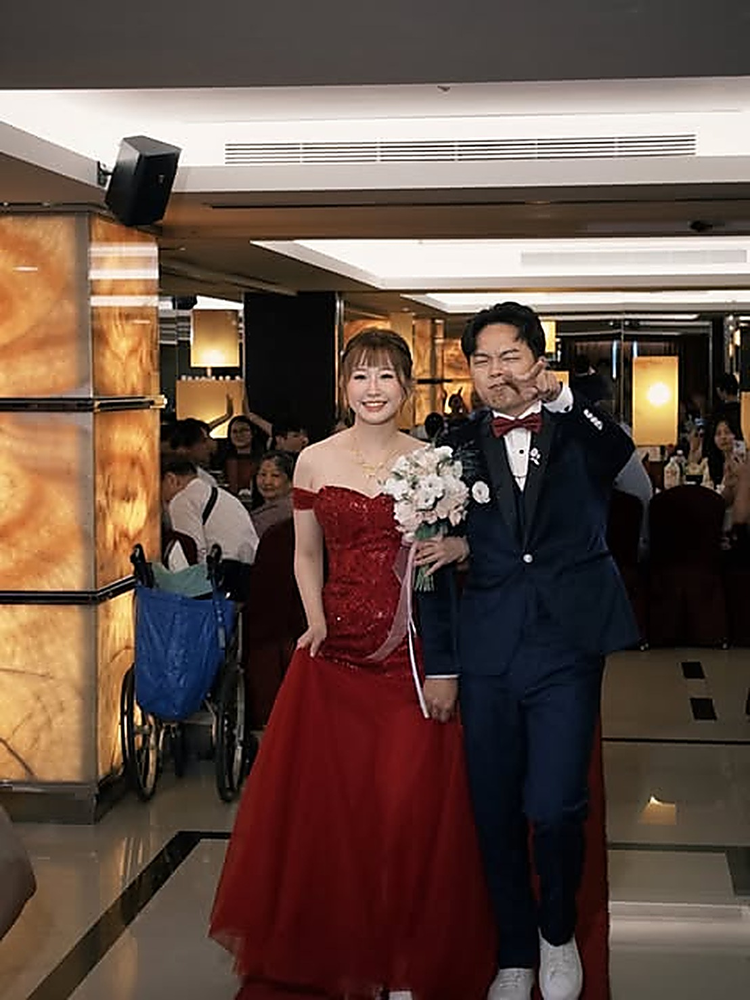
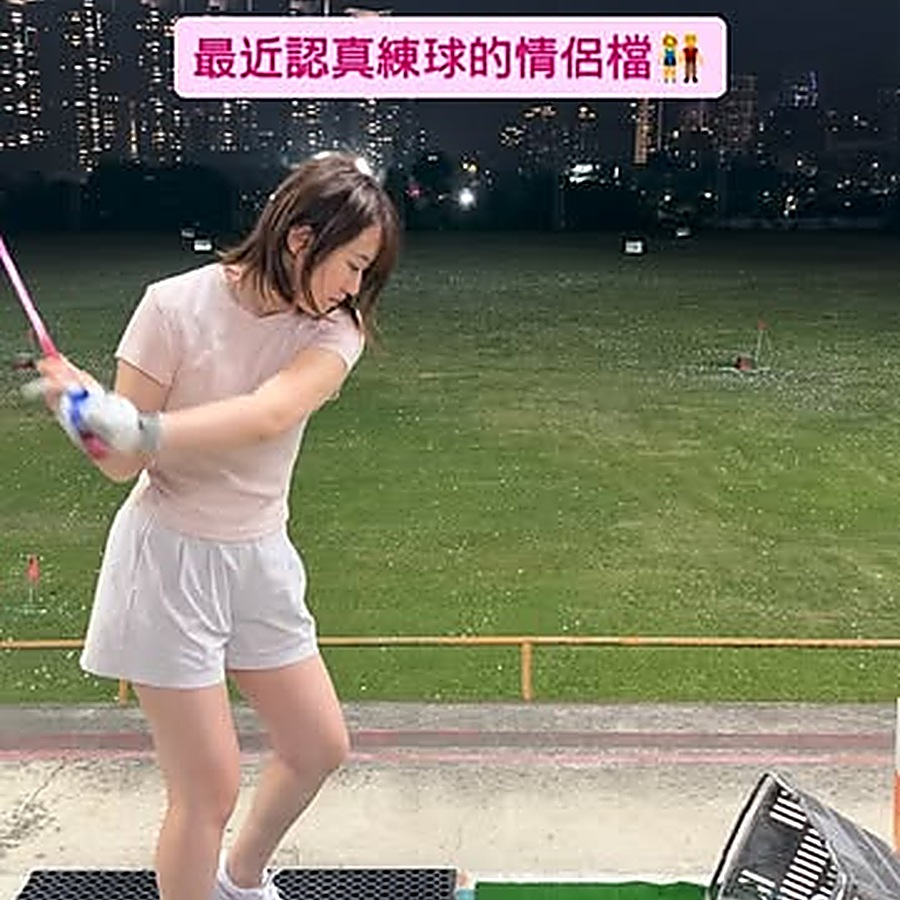
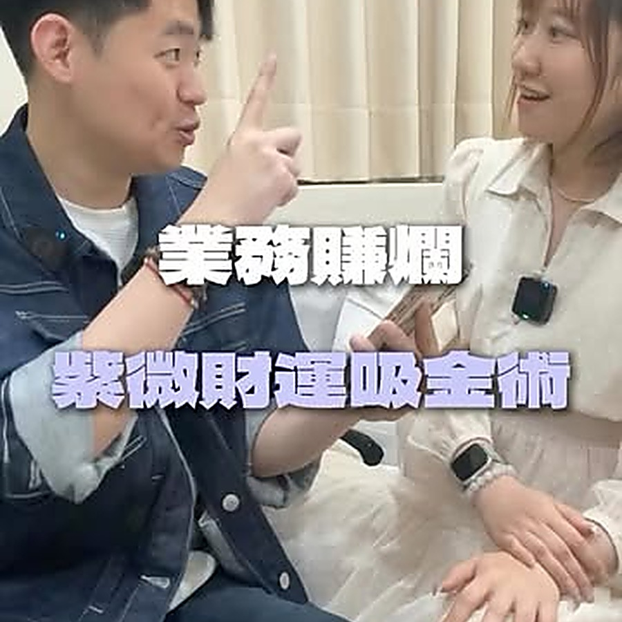
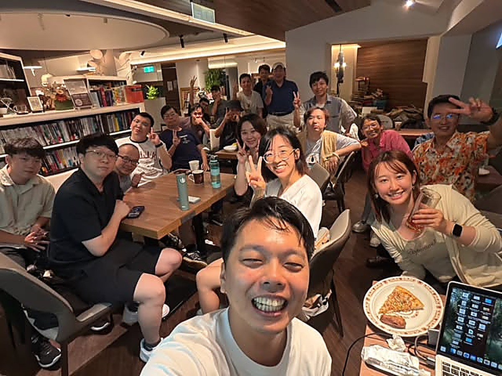
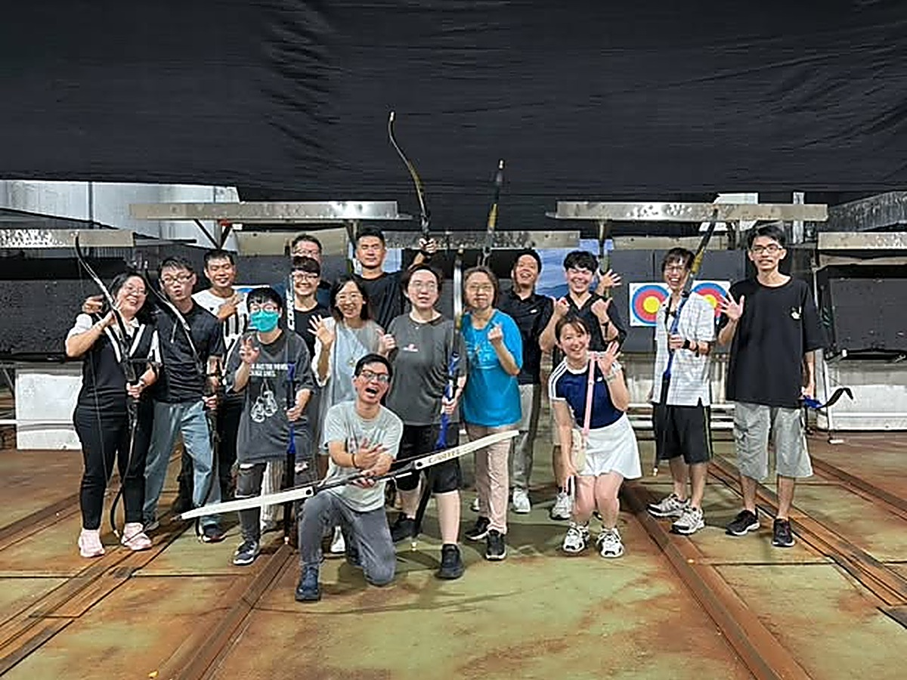
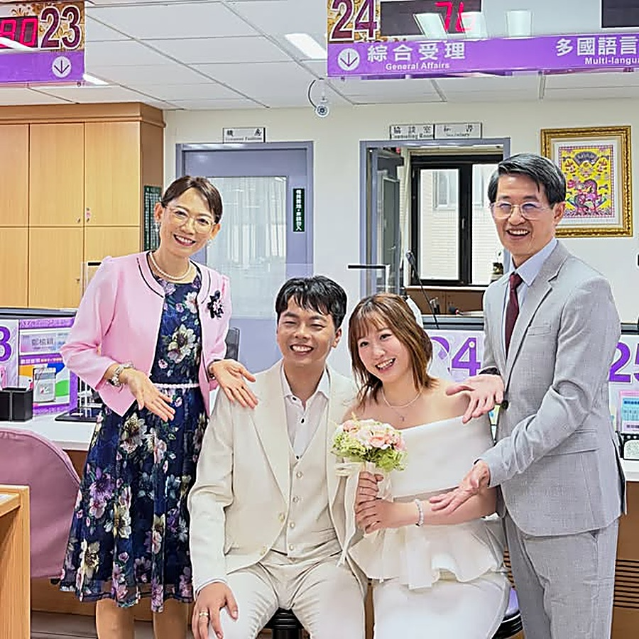
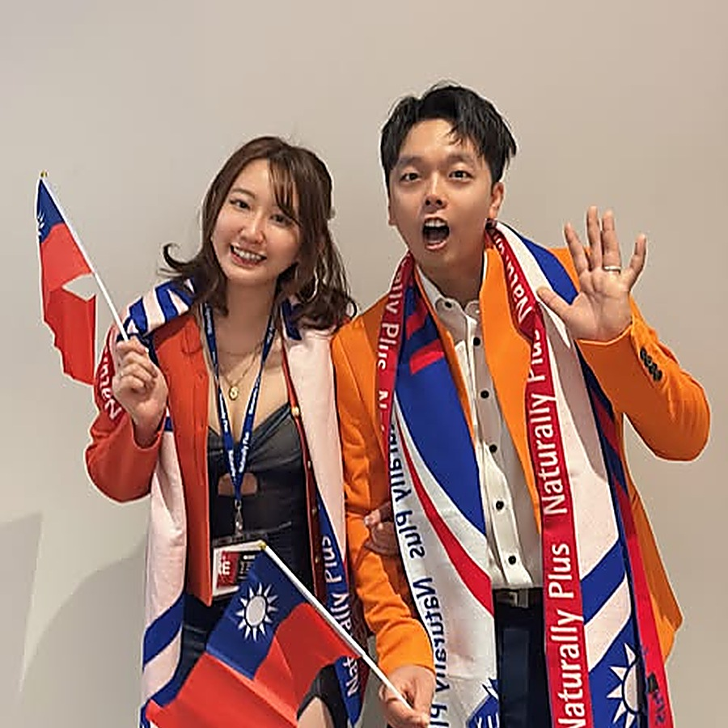
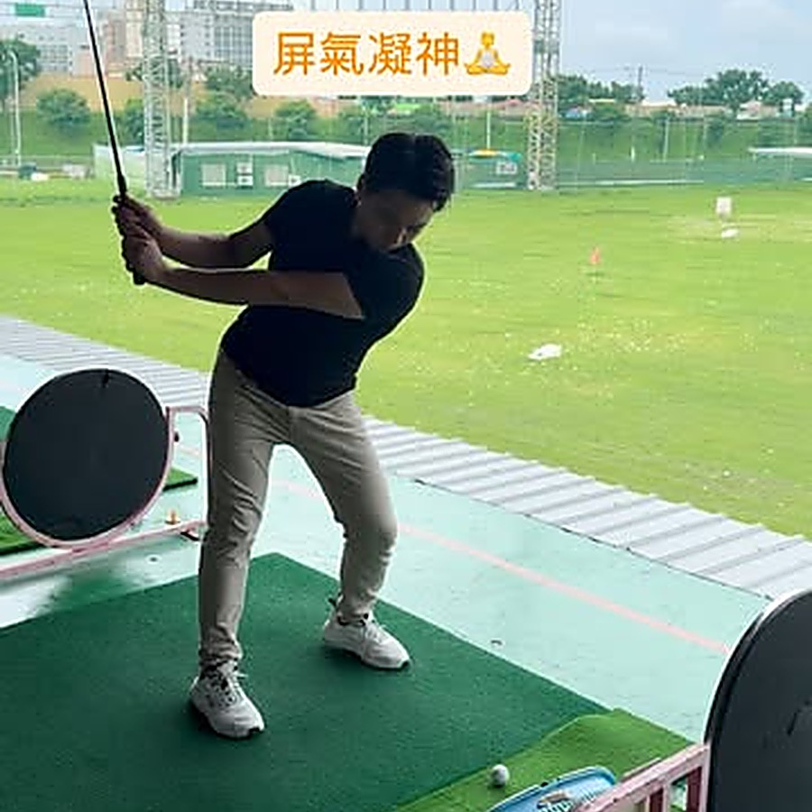
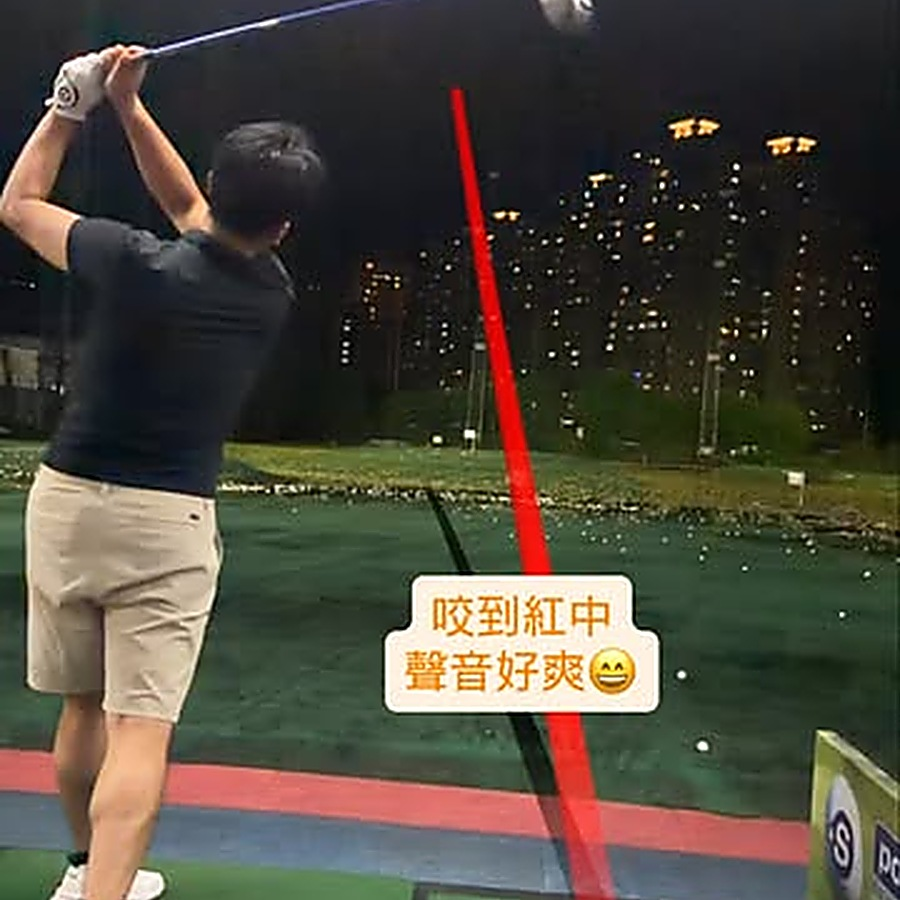

我們專為誰服務
🌱想找回健康
🩺健檢見紅字
🍱長期外食族
👵想照顧長輩
🏢企業團體
📈想經營事業
你是不是也遇過這些問題？
- 長期外食、作息不正常，想找回身體狀態？
- 健檢報告出現紅字，不知道從哪一項開始改？
- 已經吃很多保健食品，卻不知道有沒有效？
- 想幫長輩安排健康管理，卻沒時間研究？
- 想投入健康事業，但不想囤貨、不想推銷？
- 想用數據看見自己的改變，而不是憑感覺？
遇到以上任何一種情況，都歡迎先來聊聊。

形象照環貫綠佳利 Naturally Plus 健康顧問
非侵入健康快篩・個人化營養方案・到府檢測・健康講座
游輝岳（Daniel）與高瑜均夫妻兩人同為環貫綠佳利 Naturally Plus 健康顧問，服務於 Life Renew 心煥營養團隊。輝岳的家族自阿公一輩即接觸中醫與養生，他自己也在家人健康的歷程中，一路從民俗療法、中西醫走到科學化檢測；瑜均則投入預防醫學與再生醫學領域。兩人現在把重心放在「先看見數據、再談補充」：用非侵入健康快篩在 40 秒內取得 13 項身體特性與 10 項器官評分，再用白話把報告講清楚，最後才一起討論飲食與營養要怎麼調整。
左右滑動看更多
先看懂數據，再決定怎麼補
以非侵入方式在 40 秒內取得身體數據，產生 13 項身體特性與 10 項器官評分，作為後續營養建議的依據。
依照檢測結果與生活型態，提供飲食與營養補充的調整方向，而不是一套方案套用在所有人身上。
環貫綠佳利原廠產品線，包含含氫水（IZUMIO 活美水素水）與複方植化素（SUPER LUTEIN MIRTO+ 識霸明力多）等。
由輝岳與瑜均夫妻兩人一起服務，定期回測、持續調整，用數據看見自己的改變。
從預約到陪伴，五步說清楚
專業與服務
想先了解自己的身體數據？加 LINE 預約檢測
打電話或傳訊息都可以，輝岳與瑜均一起陪你聊
告訴我們你的狀況與目標，先了解，再一起決定。



照片


照片團隊活動、健康講座與檢測服務的紀錄



夫妻兩人在環貫綠佳利的活動與服務紀錄（照片取自公開社群）







| 比較項目 | 一般銷售 | 我們的服務 |
|---|---|---|
| 要不要買 | 先講產品有多好 | 先做檢測，看數據再談要不要補 |
| 建議依據 | 同一套話術套所有人 | 依 13＋10 項個人數據給建議 |
| 後續追蹤 | 買完就結束 | 定期回測，持續調整 |
| 服務方式 | 一個人單打獨鬥 | 夫妻兩人一起服務 |
| 產品來源 | 來源不明 | 環貫綠佳利原廠產品線 |
在 LINE 聊天室貼上這個網址，會自動展開成一張名片圖卡；
朋友點開就能看、一鍵加 LINE、直接導航到門市。